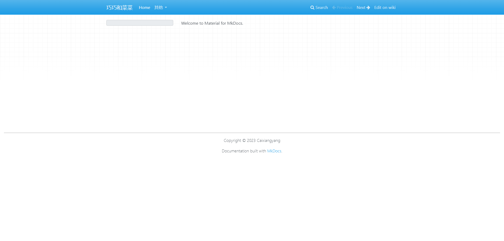

mkdocs部署¶
安装MkDocs¶
如果安装较慢，可以尝试使用国内源进行安装MkDocs配置¶
初始化项目¶
执行以下命令，创建一个名为“my-project”的MkDocs项目。
配置项目¶
在项目根目录下，有一个名为mkdocs.yml的文件，这个文件是MkDocs的配置文件。
打开mkdocs.yml文件，将其中的内容修改为以下内容。
mkdocs.yml
site_name: 巧巧和菜菜
site_author: Caixiangyang
site_description: 个人wiki博客
repo_url: https://github.com/CaixiangyangCD/wiki.git
edit_uri: blob/main/docs/
repo_name: wiki
copyright: Copyright © 2023 Caixiangyang
theme:
name: material
language: zh
# 自定义文件夹
custom_dir: overrides
# 主题切换
palette:
# 明亮主题
- media: "(prefers-color-scheme: light)"
scheme: default
toggle:
icon: material/brightness-7
name: Switch to dark mode
# 暗黑主题
- media: "(prefers-color-scheme: dark)"
scheme: slate
toggle:
icon: material/brightness-4
name: Switch to system preference
# logo
logo: assets/images/logo.png
# 网站图标
favicon: assets/images/logo.png
# 导航
features:
# 启用即时导航, 无需刷新页面
- navigation.instant
# 进度指示器, 页面在 400 毫秒后仍未完成加载时，进度指示器才会显示
- navigation.instant.progress
# 锚点跟踪, 地址栏中的url会添加锚点
- navigation.tracking
# 导航选项卡, 页面内容较多时可以使用
- navigation.tabs
# 导航选项卡(固定), 始终可见
# - navigation.tabs.sticky
# 菜单将以组的形式展示, 不再是展开或折叠
- navigation.sections
# 默认打开所有折叠的菜单
# - navigation.expand
# 文章面包屑, 显示在内容区域标题上方
- navigation.path
# 回到顶部
- navigation.top
# 首页
- navigation.indexes
# 目录侧边栏自动滚动, 以便锚点始终可见
- toc.follow
# 搜索建议
- search.suggest
# 搜索高亮
- search.highlight
# 搜索分享, 会出现一个分享图标
- search.share
# 允许用户编辑、查看内容
- content.action.edit
- content.action.view
# 代码块
# 代码注解
- content.code.annotate
# 允许复制
- content.code.copy
- content.tooltips
# 插件
plugins:
- search
# 博客插件
- blog
# 元数据插件, 为文章添加统一的元数据
- meta
# 标签
- tags
extra:
social:
# 社交图标, 显示在页脚右侧
- icon: fontawesome/brands/github
link: ''
name: GitHub
- icon: fontawesome/brands/gitlab
link: ''
name: GitLab
- icon: fontawesome/brands/x-twitter
link: ''
name: Twitter
- icon: fontawesome/brands/docker
link: ''
name: Docker
- icon: fontawesome/brands/linkedin
link: ''
name: LinkDin
# 默认显示站点的生成方式
generator: false
extra_css:
- assets/stylesheets/custom.css
extra_javascript:
- assets/javascripts/custom.js
# markdown插件
# Extensions
markdown_extensions:
# 支持缩写
- abbr
# 添加类似于高亮块, !!!开头，支持note、info、abstract、tip、warning、success、question、failure、danger、bug、example、quote
- admonition
# 允许使用特殊语法将HTML属性和CSS类添加到markdown
# 注释: annotations
# 网格: grid
# 按钮: button
# 提示: tooltip
- attr_list
# 定义列表
- def_list
# 添加脚注
- footnotes
- md_in_html
# 自动生成目录
- toc:
permalink: true
# 数学公式
- pymdownx.arithmatex:
generic: true
# 对粗体和斜体的处理
- pymdownx.betterem:
smart_enable: all
#
- pymdownx.caret
# 使admonition可以被折叠
- pymdownx.details
# 允许使用短代码来使用图标和emoji
- pymdownx.emoji:
emoji_generator: !!python/name:material.extensions.emoji.to_svg
emoji_index: !!python/name:material.extensions.emoji.twemoji
# 对代码块和内联代码高亮展示
- pymdownx.highlight:
anchor_linenums: true
line_spans: __span
pygments_lang_class: true
auto_title: true
# 增强了对内联代码的高亮展示
- pymdownx.inlinehilite
# 可以展示键盘
- pymdownx.keys
# 高亮标签
- pymdownx.mark
# 将字符转换为符号, 例如: 版权
- pymdownx.smartsymbols
- pymdownx.snippets
# 允许代码和内容块相互嵌套
- pymdownx.superfences:
custom_fences:
- name: mermaid
class: mermaid
format: !!python/name:pymdownx.superfences.fence_code_format
# 内容选项卡
- pymdownx.tabbed:
alternate_style: true
combine_header_slug: true
slugify: !!python/object/apply:pymdownx.slugs.slugify
kwds:
case: lower
# 任务列表
- pymdownx.tasklist:
custom_checkbox: true
# 删除线
- pymdownx.tilde
nav:
- Home: index.md
注意
上述配置文件中是此教程所需的全部配置。请根据自己的需求进行修改。
运行项目¶
在项目根目录下，执行以下命令，启动本地服务器。
在浏览器中打开http://127.0.0.1:8000/，即可看到效果。

发布项目¶
在项目根目录下，执行以下命令，将项目发布到GitHub Pages。
注意：如果是第一次发布，需要先在GitHub上创建一个仓库，然后将项目推送到GitHub仓库。
Material主题¶
安装主题¶
在项目根目录下，执行以下命令，安装主题。
启用主题¶
打开mkdocs.yml文件，将其中的内容修改为以下内容。
自定义首页¶
修改主题配置文件¶
在项目根目录下，打开mkdocs.yml文件，找到theme下的custom_dir选项，将其值修改为以下内容。
修改站点首页文件¶
修改docs文件夹下的index.md文件，在顶部添加以下内容
修改主题首页文件¶
修改docs文件夹下的overrides文件夹下的home.html文件
overrides/home.html
{#-
This file was automatically generated - do not edit
-#}
{% extends "main.html" %}
{% block tabs %}
{{ super() }}
<style>.md-header{position:initial}.md-main__inner{margin:0}.md-content{display:none}@media screen and (min-width:60em){.md-sidebar--secondary{display:none}}@media screen and (min-width:76.25em){.md-sidebar--primary{display:none}}</style>
<section class="mdx-container">
<div class="md-grid md-typeset">
<div class="mdx-hero">
<div class="mdx-hero__image">
<img src="assets/images/illustration.png" alt="" width="1659" height="1200" draggable="false">
</div>
<div class="mdx-hero__content">
<h1>Caixiangyang的个人博客</h1>
<p>{{ config.site_description }}</p>
<a href="{{ page.next_page.url | url }}" title="{{ page.next_page.title | e }}" class="md-button md-button--primary">
快速开始
</a>
</div>
</div>
</div>
</section>
{% endblock %}
{% block content %}{% endblock %}
{% block footer %}{% endblock %}
添加资源文件¶
在docs文件夹下，创建assets文件夹，在assets文件夹下创建images文件夹，将illustration.png文件放入images文件夹中。并且将css文件和js文件复制到assets文件夹下的同名文件夹中。
注意
注意: 将资源文件放入assets文件夹下后，需要在mkdocs.yml文件中添加以下内容。
运行项目¶
在项目根目录下，执行以下命令，启动本地服务器。
在浏览器中打开http://127.0.0.1:8000/，即可看到效果。
发布到自己的服务器¶
将通过mkdocs build编译出的site目录，手动上传到服务器。
在服务器上，安装nginx，配置如下：
nginx.conf
server {
# 客户端访问端口
listen 8080;
# 客户端访问域名
server_name 127.0.0.1;
# 静态资源根目录
root /home/xxx/site;
gzip_types text/plain application/javascript text/css image/svg+xml;
gzip_proxied no-cache no-store private expired auth;
gzip_static on;
#brotli_static on;
gunzip on;
location = / {
index index.html;
}
}